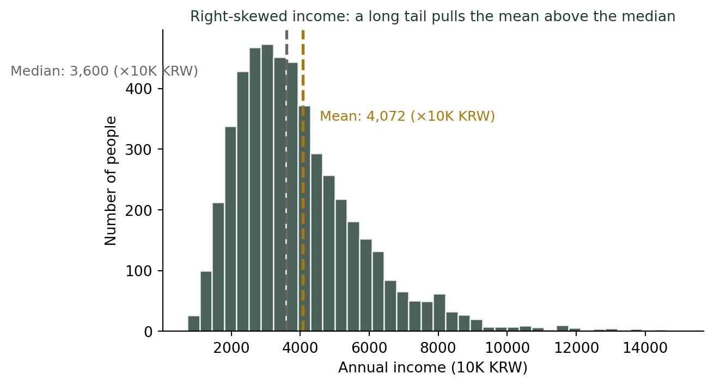
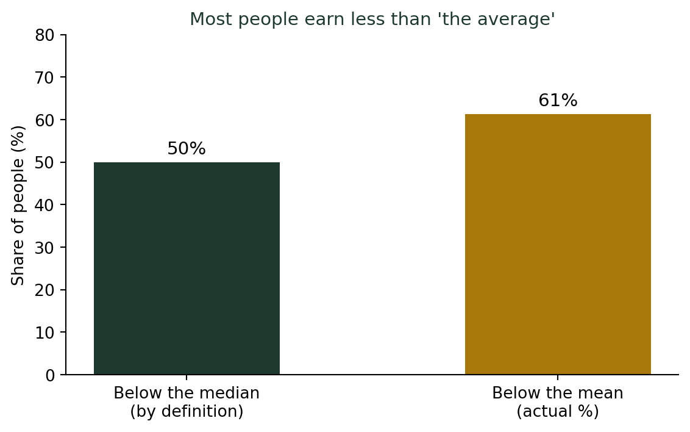

(숫자를 대표하는 방법) 연봉은 평균보다 중앙값으로 보아야 하는 이유
통계기초
기술통계
통계청 가계동향조사의 실제 평균 소득 통계를 보면, 왜 ’평균’이라는 숫자가 대다수의 체감과 다를까? 왜도(skewness)라는 개념으로 그 이유를 풀어봅니다.
“평균 가구소득 월 548만 원”, 내 통장은 왜 그만큼이 아닐까
수업 시간에 소득 통계 이야기를 꺼내면 늘 강의실 공기가 조금 무거워진다. 다들 “평균”이라는 말에 은근히 자신을 대입해보기 때문일 것이다. 통계청 KOSIS 가계동향조사 최신 자료(2026년 1/4분기)를 보면, 전체가구의 월평균 소득은 5,480,864원이다. 그런데 표를 조금만 더 들여다보면 눈에 띄는 격차가 보인다.
| 구분 | 전체가구 | 근로자가구 | 근로자외가구 |
|---|---|---|---|
| 월평균 소득 | 5,480,864원 | 6,454,647원 | 4,086,348원 |
| 가구분포 | 100% | 58.9% | 41.1% |
(출처: 통계청 KOSIS, 가계동향조사, 2026년 1/4분기)
월급을 받는 근로자가구(645만 원)와 자영업·은퇴가구 등 근로자외가구(409만 원)의 평균은 236만 원 넘게 차이가 난다. “전체가구 평균 548만 원”이라는 숫자 하나는, 성격이 전혀 다른 이 두 집단을 한데 뭉뚱그린 결과다.
평균은 이렇게 서로 다른 집단이 섞여 있을 때도, 같은 집단 안에서 소수가 유난히 많이 벌 때도 왜곡될 수 있다. 이번 글에서는 후자, 즉 한 집단 안에서 소수의 고소득자가 평균 자체를 얼마나 끌어올릴 수 있는지를 살펴본다.
소득 분포는 한쪽으로 길게 늘어져 있다
키나 시험 점수처럼 좌우가 대칭인 데이터라면 평균 근처에 절반, 그 위아래로 사람들이 고르게 퍼져 있다. 그러나 소득은 다르다. 대다수는 중간 어딘가에 몰려 있고, 극소수의 최상위 소득자가 아주 멀리, 아주 길게 꼬리를 늘어뜨린다.
이렇게 분포가 한쪽으로 치우친 정도를 통계학에서는 왜도(skewness)라 부른다.
왜도(Skewness)란
- 왜도 = 0: 좌우 대칭 (평균 = 중앙값). 정규분포가 대표적.
- 왜도 > 0 (오른쪽 꼬리): 소수의 큰 값이 오른쪽으로 길게 늘어짐. 평균이 중앙값보다 커진다. 소득, 집값, 자산이 대표적.
- 왜도 < 0 (왼쪽 꼬리): 소수의 작은 값이 왼쪽으로 길게 늘어짐. 평균이 중앙값보다 작아진다. 예: 시험이 너무 쉬워서 대부분 고득점, 일부만 크게 낮은 점수를 받는 경우.
소득처럼 왜도가 큰 데이터에서는, 평균이 대표값 역할을 제대로 하지 못한다.
더 깊이: 왜도를 계산하는 여러 방법
이 글에서는 왜도를 부호(+/−)로만 설명했지만, 실제로는 여러 공식으로 정량화할 수 있다. 강의노트 〈기초통계 6. 정규변환 — 치우침 진단 통계량〉에서는 적률 기반 왜도, 평균과 중앙값의 차이를 이용한 왜도, 사분위수 기반 왜도 등 다섯 가지 계산 방법과 해석 기준을 비교해서 다룬다.
가상의 소득 5천여 명을 시뮬레이션해보면
아래 분포는 통계청 실제 자료가 아니라, 왜도가 큰 소득 데이터에서 평균이 어떻게 왜곡되는지 보여주기 위해 만든 가상의 예시다. 개인별 근로소득처럼 일부 초고소득자가 존재하는 데이터를 가정해 시뮬레이션했다.
이 시뮬레이션에서 중앙값은 약 3,600만 원, 평균은 약 4,072만 원이다. 평균이 중앙값보다 470만 원 가까이 높다. 이유는 단순하다. 아주 소수의 고소득층(그래프 오른쪽 끝, 이 그림에는 다 담기지도 않는 억대 연봉자들)이 평균을 강하게 끌어올리기 때문이다.
“평균 이하”인 사람이 다수가 되는 이유

중앙값은 정의상 항상 정확히 절반(50%)을 가른다. 그러나 평균은 그렇지 않다. 이 시뮬레이션에서는 전체의 61%가 평균보다 적게 번다. “평균 이하”라는 말은, 왜도가 큰 데이터에서는 사실 다수파에 속한다는 뜻이다.
“중위소득”이라는 이름의 서로 다른 두 숫자
평균 vs 중앙값, 언제 무엇을 봐야 할까
| 상황 | 권장 대표값 | 이유 |
|---|---|---|
| 소득, 자산, 집값 | 중앙값 | 극소수 초고소득층이 평균을 크게 왜곡 |
| 키, 몸무게, 시험 점수(정상 범위) | 평균 | 좌우 대칭에 가까움 |
| 회사의 “평균 연봉” 발표 | 중앙값 + 평균 함께 | 경영진 몇 명의 연봉이 평균을 부풀릴 수 있음 |
| 부동산 “평균 집값” | 중앙값 | 초고가 매물 소수가 평균을 밀어올림 |
여기서 한 가지 헷갈리기 쉬운 지점이 있다. 통계청은 가계금융복지조사 등 표본조사를 바탕으로, 실제 가구를 대상으로 한 중위소득 통계를 직접 발표한다. 실측치라는 뜻이다.
반면 뉴스에서 “기준 중위소득 150% 이하는 지원 대상”처럼 복지 정책의 기준선으로 자주 언급되는 기준 중위소득(Standard Median Income)은 통계청이 아니라 보건복지부가 매년 별도로 고시하는 값이다. 통계청의 실제 중위소득 통계를 참고하되, 중앙생활보장위원회의 심의·의결을 거쳐 정책적으로 결정되므로 통계청이 발표하는 실측 중위소득과는 다른 숫자다.
즉 “중위소득”이라는 같은 이름 아래, (1) 통계청이 조사해 발표하는 실제 통계와 (2) 보건복지부가 정책적으로 정하는 기준 중위소득이라는 서로 다른 두 숫자가 존재한다. 기초생활보장, 건강보험료 감면 같은 복지 기준선을 이야기할 때는 대개 후자를 가리킨다.
결론: 평균 하나만 보고 나를 비교하지 말자
소득 관련 통계를 읽는 법
- “평균 연봉”이라는 단어를 보면 곧바로 “중앙값은 얼마일까”를 떠올린다.
- 평균과 중앙값의 차이가 클수록, 그 데이터는 왜도가 크다는 뜻이다. 즉 소수가 전체 그림을 좌우하고 있다.
- 내가 “평균 이하”라고 해서 내가 “못 버는 것”은 아니다. 오히려 그 편이 다수일 가능성이 높다.
- 회사나 통계 발표를 볼 때, 평균만 제시하고 중앙값을 감춘다면 의심해봐야 한다.
평균은 계산하기 쉽고 익숙한 숫자지만, 꼬리가 긴 데이터 앞에서는 힘을 잃는다. 연봉 이야기를 할 때 우리에게 필요한 숫자는 평균이 아니라, 절반의 절반을 정확히 가르는 중앙값이다.
나는 학생들에게 이 통계청 표 하나를 보여주는 것만으로 수업의 절반을 한 셈이라고 생각한다. “평균 이하”라는 말에 위축될 필요가 없다는 것을, 숫자가 직접 증명해주기 때문이다.